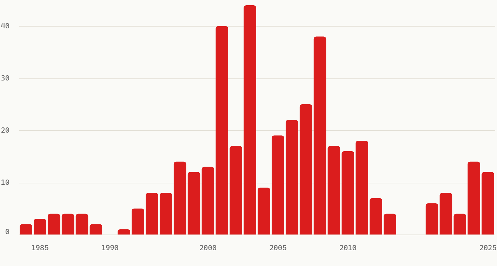
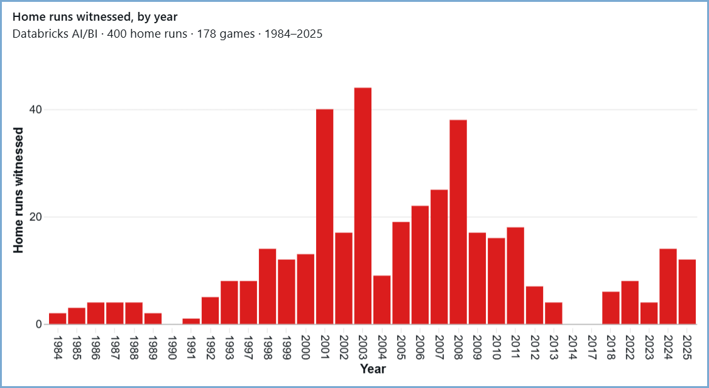
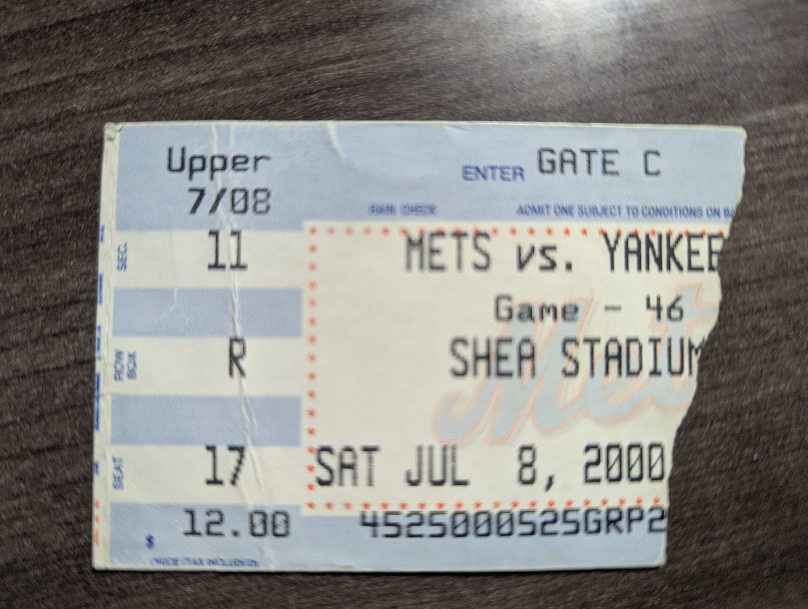
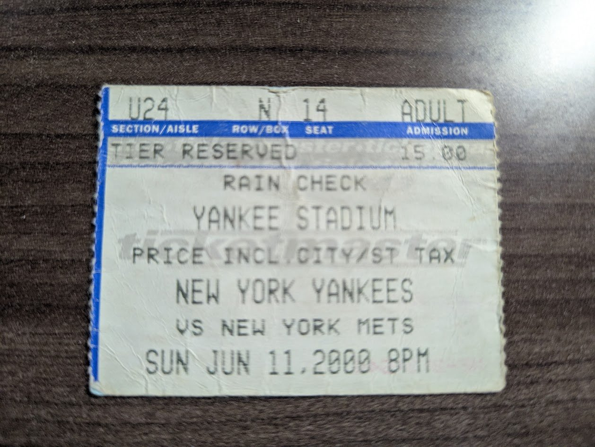

Do the numbers survive the move?
If your org is moving, it's moving toward one of these two. Snowflake, with Cortex and Streamlit. Databricks, with Genie and AI/BI. You've been told both are where the chart goes next.
So I put the same data in each. Wrote the same seven definitions in each one's own semantic layer. Asked each one's agent the same question. Drew the same bar chart on each one's front porch.
Seven for seven, both. The interesting part is what each one did on the way to the right answer.
The game. Saturday, July 8, 2000. The Mets and Yankees played twice in one day in two ballparks: an afternoon at Shea and a night in the Bronx, the make-up of a June 11 rainout. I was at both. Yankees 4, Mets 2, both times, and Rivera saved both. Doc Gooden, the old Met, won the first one at Shea. Clemens won the second one, the night he hit Piazza. Same two teams. Same answer. Two front doors.


The seven metrics went into a native semantic view, Snowflake's object for naming tables, dimensions, and metrics so tools can ask by name. Plain SQL against it passed the harness, seven of seven. Then a Cortex agent, one CREATE AGENT statement, bound to the same view. It couldn't query at all. The agent's path serializes the view to a YAML model and rejects quoted lowercase column names; the SQL path had accepted them fine. Same object, two front doors, one validator said yes and the other said no. The fix was a generated set of unquoted views underneath; the semantic view's logical names didn't change, so the harness never noticed.
On the run that worked, the agent's first SQL attempt failed in the open. Its retry re-derived the home run definition by hand, SUM(CASE WHEN event_code = 23 …), instead of asking the governed metric by name. Right answer, 400. The one surface in the run that wrote SQL over a semantic layer it could have just called. And its platform log was the richest of any I measured: 12 rows for one question, per-step model, per-step tokens, the exact SQL, the query id, with no setup.
The seven metrics went into Unity Catalog metric views, YAML declaring dimensions and measures over the ported marts. Seven of seven. Then Genie, Databricks' natural-language agent, over those five views. Asked about home runs, it wrote SELECT MEASURE(home_runs_witnessed) FROM mv_plays. The governed measure, by name. Closest of every SQL-emitting surface in the run to what a semantic layer is for.
And its trace did something no other surface did. Four typed thoughts, one of them labeled understanding: “the query assumes all games in the data are games Wax attended.” It was right, and it said so. Every other agent in this run answered; this one volunteered its own caveat.
The Genie space can't be created by API, so it was made once in the UI. One click, then everything is scripts. The model is called twice per turn, once to plan and once to phrase, and at about 18 seconds it was the slowest surface, mostly warehouse cold start.
The first version of my record had those two games swapped. The spreadsheet I loaded into the warehouse put the day game in the Bronx and the night game at Shea. Retrosheet says otherwise, and Retrosheet is right. They're the only two games of 178 where my ballpark and theirs disagree. Somewhere between entering them by hand and the concatenation formula I built for the joins, a key made of the date and the two teams couldn't tell one game from the other. Retrosheet's id carries the game number. Mine had a zero for both.
No total moved. A swap nets out: each park gains a game and loses one. Every count on this site stayed right, and every parity check stayed green. Nothing that adds things up could have caught it. A row-level test did, the first time my ids had to match Retrosheet's. The ids are fixed. The swapped venues are still in the warehouse, on purpose, because nothing downstream reads them wrong. The numbers survived. The doors didn't.


Pick the one definition your team would fight over. Ask both doors for it. Then check one row by hand.
Next, batting 8th: Does the card match the record? →